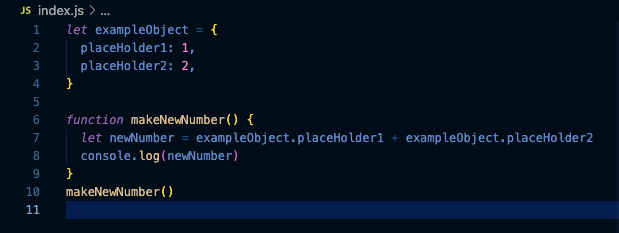

They’re like 3 friends or a team each with different skills. HTML is the brains, CSS is the pretty face and JavaScript is the leader who pulls the others together and makes things happen.
Explain control flow and loops using an example process from everyday life.Control flow is basically the order your computer reads code which is left to right and top to bottom. The control flow can be affected by particular functions such as loops which will cause the reader to repeat or fall back on itself a given number of times, maybe going through something like an array. I think of it like making cups of tea while you are spending a day at home completing a list of to do’s. You are systematically working through each thing in the list and achieving them, but a set number of times per day you will go back and do something you have already done again and again like make a cup of tea. In a way this is similar to how loops effect the control flow of a document.
Describe what the DOM is and an example of how you might interact with it.The DOM or the document object model is a tool you can access to view a model of your document live. If you go into any webpage, right click anywhere on the page and click “inspect” you will be taken into developer tools. What you are looking at is the DOM. It is every file and line of code which together make up the page you are looking at, but delivered to you in a graphic interface that allows you to look through, edit and test changes to the site live locally or even remotely if you have the permissions. It is presented in a tree like structure of parent > child >= sibling that should reflect the cohesiveness of your document or otherwise assist in checking for bugs.
Explain the difference between accessing data from arrays and objects.To understand the difference in how data is accessed from each of these elements we need to understand what the differences between these two elements actually are. Firstly an array is a type of variable which within its’ parenthesis has specifically named pieces of information in quotation marks which the computer recognises as strings and assigns each a numerical value.
Take this example:
This line of code is an array and its’ square brackets contain 4 seperate strings. When the computer reads this piece of code it will assign each string a number starting from 0.
so;
With this in mind, if we wanted to access a string from an array we could specify and call it from its’ numerical value and apply that number to a function such as a loop.
Objects are a little different. While they may be similar to an array in the sense that they are a variable with a name and parenthesis that contain data, they differ in the fact that the data of an object has no attached numerical value. There are a few different ways we could write these out and define its’ values, using either a key or a parameter containing arguments. We’ll look at an object containing two arguments for now.
Take this example:

This line of code is made up of 3 components firstly the identifier “let” Is telling the computer that this line of code is a variable and it really does exist. “let” could be exchanged for “var”(variable) or “const”(constant) here and it would still function the same way. Then we have the name `exampleObject`, this could be called anything we want it doesn’t matter. What’s important to remember is this is what we will refer to if we wanted to call it later on. Lastly in the parenthesis we have the parameter which is distinguished by its () brackets. It contains two arguments here, placeHolder1 and placeHolder2. These don’t mean anything specific right now but we just want the computer to know that they are there.
Now if we wanted to elaborate on what those arguments actually are; we could do something like this:
Now imagine you want to access and use the data from that object later on. You could do a command like:
Now when we open our browser and access the console in eDev-tools it will return to us the number 3 and it will have gotten that number by accessing data from an object, as seen in the example bellow.